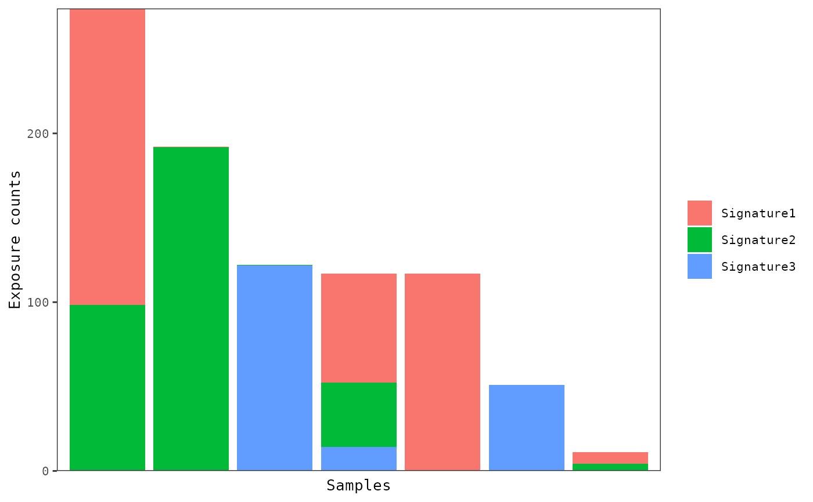

Display sample exposures with bar, box, or violin plots
Source:R/plot_exposures.R
plot_exposures.RdThe distributions of mutational signatures can be viewed
with barplots or box/violin plots. Barplots are most useful for viewing
the proportion of signatures within and across samples. The box/violin plots
are most useful for viewing the distributions of signatures with respect to
sample annotations. Samples can be grouped using the group_by
parameter. For barplots, various methods of sorting samples from left
to right can be chosen using the sort_samples parameter.
Usage
plot_exposures(
musica,
model_name,
modality = "SBS96",
result_name = "result",
plot_type = c("bar", "box", "violin"),
proportional = FALSE,
group_by = "none",
color_by = c("signature", "annotation"),
annotation = NULL,
num_samples = NULL,
sort_samples = "total",
threshold = NULL,
same_scale = FALSE,
add_points = FALSE,
point_size = 2,
label_x_axis = FALSE,
legend = TRUE,
plotly = FALSE
)Arguments
- musica
A
musicaobject containing a mutational discovery or prediction.- model_name
The name of the desired model.
- modality
The modality of the model. Must be "SBS96", "DBS78", or "IND83". Default
"SBS96".- result_name
Name of the result list entry containing desired model. Default
"result".- plot_type
One of
"bar","box", or"violin". Default"bar".- proportional
If
TRUE, then the exposures will be normalized to between 0 and 1 by dividing by the total number of counts for each sample. DefaultFALSE.- group_by
Determines how to group samples into the subplots (i.e. facets). One of
"none","signature"or"annotation". If set to"annotation", then a sample annotation must be supplied via theannotationparameter. Default"none".- color_by
Determines how to color the bars or box/violins. One of
"signature"or"annotation". If set to"annotation", then a sample annotation must be supplied via theannotationparameter. Default"signature".- annotation
Sample annotation used to group the subplots and/or color the bars, boxes, or violins. Default
NULL.- num_samples
The top number of sorted samples to display. If
NULL, then all samples will be displayed. Ifgroup_byis set, then the top samples will be shown within each group. DefaultNULL.- sort_samples
This is used to change how samples are sorted in the barplot from left to right. If set to
"total", then samples will be sorted from those with the highest number of mutation counts to the lowest (regardless of how the parameter"proportional"is set). If set to"name", then samples are sorted by their name with themixedsortfunction. If set to one or more signature names (e.g."Signature1"), then samples will be sorted from those with the highest level of that signature to the lowest. If multiple signatures are supplied then, samples will be sorted by each signature sequentially. Default"total".- threshold
Exposures less than this threshold will be set to 0. This is most useful when more than one signature is supplied to
sort_samplesas samples that are set to zero for the first exposure will then be sorted by the levels of the second exposure. DefaultNULL.- same_scale
If
TRUE, then all subplots will have the same scale. Only used whengroup_byis set. DefaultFALSE.- add_points
If
TRUE, then points for individual sample exposures will be plotted on top of the violin/box plots. Only used whenplot_typeis set to"violin"or"box". DefaultTRUE.- point_size
Size of the points to be plotted on top of the violin/box plots. Only used when
plot_typeis set to"violin"or"box"andadd_pointsis set toTRUE. Default2.- label_x_axis
If
TRUE, x-axis labels will be displayed at the bottom of the plot. DefaultFALSE.- legend
If
TRUE, the legend will be displayed. DefaultTRUE.- plotly
If
TRUE, the the plot will be made interactive usingplotly. DefaultFALSE.
Examples
data(res_annot)
plot_exposures(res_annot,
model_name = "res_annot", plot_type = "bar",
annotation = "Tumor_Subtypes"
)
